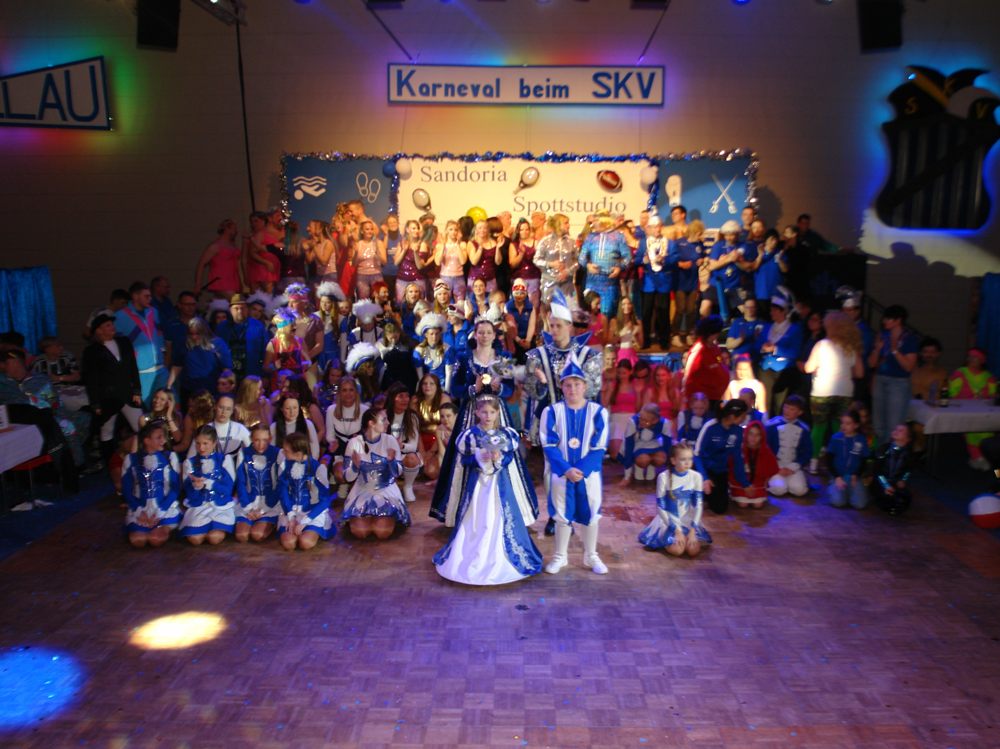
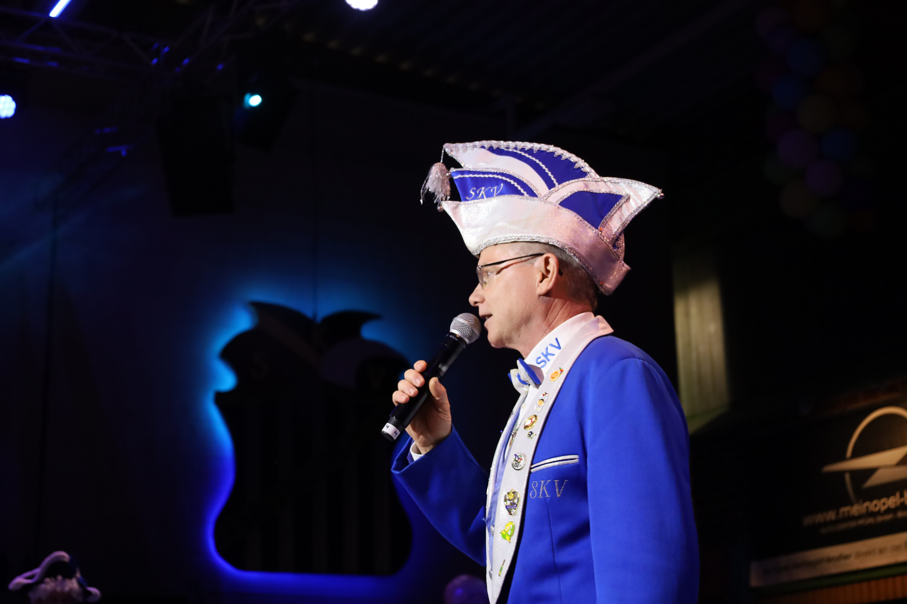
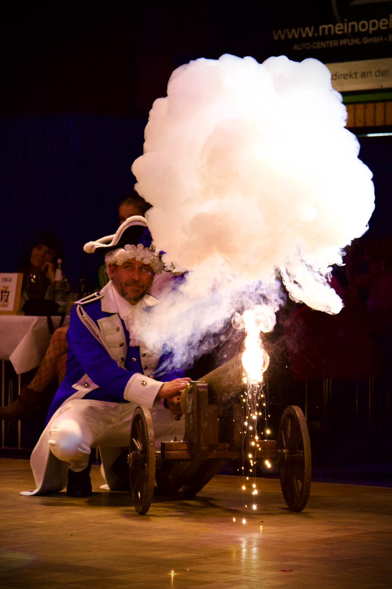

Gemeinschaft statt Konkurrenz
Den eigenen Verein im Rücken, neue Freunde am Tisch: Hier ist Platz für Begegnungen, die über einen Abend hinausgehen.

Karneval verbindet
Seit 2026
Von Vereinen, für Vereine.
Ein Abend, der Karnevalsvereine zusammenbringt: neue Gesichter kennenlernen, gemeinsam auf der Bühne stehen und die Freude am Karneval teilen.
Was uns zusammenbringt
Beim Sandersdorfer Narrengipfel treffen Menschen aufeinander, die dieselbe Leidenschaft leben – und sich vielleicht noch nie begegnet sind. Aus unterschiedlichen Traditionen wird ein gemeinsamer Abend voller Bühnenmomente, guter Gespräche und neuer Freundschaften.
Die Idee ist einfach: Vereine gestalten den Abend für Vereine. Ihr erlebt, was andere begeistert, bringt eure eigene Begeisterung mit und feiert miteinander. Der Sandersdorfer Karnevalsverein e. V. bringt euch dafür als Gastgeber zusammen. Die Veranstaltung ist nicht gewinnorientiert.
Den eigenen Verein im Rücken, neue Freunde am Tisch: Hier ist Platz für Begegnungen, die über einen Abend hinausgehen.
Jeder Verein hat seine Geschichten, Traditionen und Ideen. Genau diese Vielfalt macht den gemeinsamen Abend aus.
Wir schätzen, was die anderen mitbringen, und freuen uns miteinander. Gemeinschaft steht im Mittelpunkt.

Bühnenmomente, die verbinden
Gardetanz, Showtanz, Männerballett oder Büttenrede: Auf der Bühne wird sichtbar, wie vielfältig Karneval sein kann. Jeder Beitrag bringt ein Stück Vereinsleben mit – und alle feiern mit.
Der Applaus gehört uns allen. Beim Sandersdorfer Narrengipfel zählt das gemeinsame Erlebnis, unabhängig davon, aus welchem Verein ihr kommt.
Ihr müsst nicht auf der Bühne stehen, um Teil davon zu sein. Kommt mit euren Vereinsfreunden, entdeckt andere Programme und genießt einen Abend, an dem der Karneval uns alle verbindet.
Rückblick auf die Premiere
16 Vereine und rund 300 Karnevalisten haben 2026 gezeigt, wie viel Freude ein Abend über Vereinsgrenzen hinweg machen kann. Die Premiere erhielt durchweg positives Feedback – und machte Lust auf ein Wiedersehen.
Als überregionaler Nachfolger des ABI-Sessionsfinales öffnet der Sandersdorfer Narrengipfel den Blick über die Region hinaus. Daraus soll ein jährlicher Treffpunkt werden, zu dem Vereine immer wieder gerne zurückkommen.

Ihr möchtet mit eurem Verein dabei sein oder uns erst einmal kennenlernen? Schreibt uns – wir freuen uns auf euch.